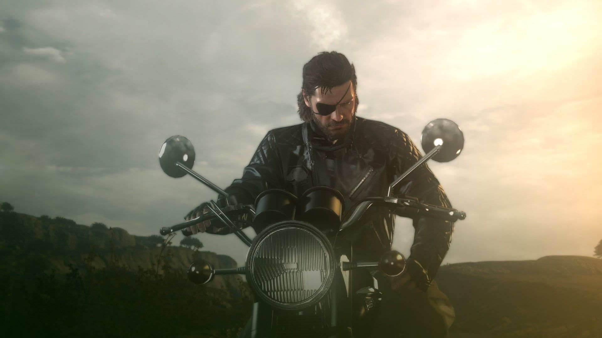
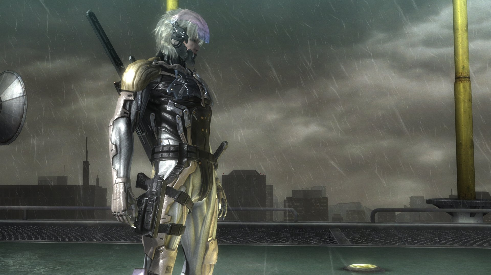

7 moich ulubionych gier komputerowych
Moje ulubione gry to:
- METAL GEAR SOLID V: THE PHANTOM PAIN
- Middle-earth: Shadow of War
- METAL GEAR RISING: REVENGEANCE
- Sekiro: Shadows Die Twice
- Genshin Impact
- Ghost of Tsushima
- Assassin's Creed II
METAL GEAR SOLID V: TPP
Metal Gear Solid V: The Phantom Pain to gra akcji, stworzona przez Hideo Kojimę i wydana przez Konami w 2015 roku. Jest to piąta główna odsłona popularnej serii Metal Gear Solid. Gra jest rozwinięciem Metal Gear Solid V: Ground Zeroes i stanowi część większej narracji zatytułowanej Metal Gear Solid V Experience. Rozgrywka w The Phantom Pain jest otwarta i nie-linearna. Gracz ma do dyspozycji duży otwarty świat, a misje można wykonywać w różny sposób – używając taktyki skradania się, walki wręcznej, czy też korzystając z różnorodnych broni i pojazdów. Z gier w które grałem w tym roku, ta jest zdecydowanie moja ulubiona.
Do góry
Middle-earth: Shadow of War
Middle-earth: Shadow of War to gra akcji-RPG osadzone w świecie stworzonym przez J.R.R. Tolkiena, który jest znanym uniwersum fantastycznym znad Władcy Pierścieni. Gra została wydana przez Warner Bros. Interactive Entertainment i jest kontynuacją Middle-earth: Shadow of Mordor. Gra oferuje ogromny otwarty świat, zróżnicowany teren, rozmaite zadania i liczne sekrety do odkrycia. Wprowadza również nowe postacie z uniwersum Władcy Pierścieni, zarówno sprzymierzeńców, jak i przeciwników. Ta gra jest dla mnie bardzo nostalgiczna, ponieważ grałem w nią dosyć dawno. Co jakiś czas jednak do niej wracam, co jest dla mnie zawsze niesamowitym przeżyciem.
Do góry
METAL GEAR RISING: REVENGEANCE
Metal Gear Rising: Revengeance to gra akcji stworzona przez PlatinumGames i wydana przez Konami. Gra została wydana w 2013 roku i jest spin-offem popularnej serii Metal Gear Solid. Gra cechuje się intensywnym tempem rozgrywki, dynamicznymi walkami z bossami oraz spektakularnymi sekwencjami akcji. Ponadto, Metal Gear Rising: Revengeance posiada charakterystyczny styl artystyczny, przypominający japońskie animacje, co nadaje grze unikalny wygląd. W tą grę grałem kilka lat temu, spodobała mi się do tego stopnia, że każdego bossa pokonałem bez otrzymywania obrażeń.
Do góry
Sekiro: Shadows Die Twice
Sekiro: Shadows Die Twice to gra akcji stworzona przez japońskie studio FromSoftware i wydana przez Activision. Gra została wydana w 2019 roku i zdobyła ogromną popularność oraz uznanie krytyków(m.in zdobyła tytuł gry roku). Jest to produkcja, która łączy elementy akcji, przygody i gry fabularnej, osadzona w unikalnym świecie fantasy inspirowanym japońskim feudalizmem. Gra wyróżnia się piękną oprawą graficzną, atmosferycznymi lokacjami i wymagającym wyzwaniem, które stanowią starcia z potężnymi przeciwnikami. W tej grze zdobyłem każde osiągnięcie i przeszedłem ją 5 razy, więc chyba tu pasuje :3
Do góry
Genshin Impact
Genshin Impact to darmowa gra akcji-RPG stworzona i wydana przez chińskie studio miHoYo. Gra została wydana we wrześniu 2020 roku. Rozgrywka w Genshin Impact skupia się na eksploracji otwartego świata, rozwiązywaniu zagadek, walkach z potworami i zbieraniu zasobów. Gra zdobyła dużą popularność dzięki swojej imponującej oprawie graficznej, dynamicznej rozgrywce oraz bogatemu, rozwiniętemu światu. W tą grę gram regularnie już od jakiegoś czasu. Wciągnął mnie w nią klimat oraz piękna oprawa graficzna, którą już wspomniałem.
Do góry
Ghost of Tsushima
Ghost of Tsushima to gra akcji typu open-world stworzona przez studio Sucker Punch Productions i wydana przez Sony Interactive Entertainment. Gra została wydana w lipcu 2020 roku. Akcja gry toczy się w feudalnej Japonii podczas mongolskiej inwazji, a gracz wciela się w samuraja o imieniu Jin Sakai. Gra oferuje otwarty świat do eksploracji, w którym gracz może swobodnie poruszać się po pięknie odwzorowanej feudalnej Japonii. Centralnym elementem rozgrywki jest system walki, który łączy w sobie umiejętności samurajskie z elementami skradanki. W tą grę grałem parę lat temu i skończyłem ją 2 razy "na 100%".
Do góry
Assassin's Creed II
Assassin's Creed II to akcji-stealthowa gra wideo stworzona przez studio Ubisoft Montreal i wydana przez Ubisoft w 2009 roku. Jest to druga odsłona popularnej serii Assassin's Creed. Gra oferuje otwarty świat, w którym gracz może swobodnie eksplorować historyczne miasta takie jak Florencja, Wenecja i Forlì. System walki w grze został udoskonalony w porównaniu do pierwszej części i oferuje bardziej płynne i zróżnicowane manewry. Assassin's Creed II odegrała kluczową rolę w kształtowaniu dalszego kierunku serii Assassin's Creed. Ta gra jest dosyć krótka, ale tylko w tej połowie roku skończyłem ją 2 razy, więc tak, spodobała mi.
1 / 3

METAL GEAR SOLID V: THE PHANTOM PAIN
2 / 3

METAL GEAR RISING: REVENGEANCE
❮
❯
| Nazwa gry |
Moja ocena |
| METAL GEAR SOLID V: THE PHANTOM PAIN |
9/10 |
| Middle-earth: Shadow of War |
8/10 |
| METAL GEAR RISING: REVENGEANCE |
8,5/10 |
| Sekiro: Shadows Die Twice |
9/10 |
| Genshin Impact |
8/10 |
| Ghost of Tsushima |
8,5/10 |
| Assassin's Creed II |
8/10 |
Do góry
Paweł Żuchowski 2TB